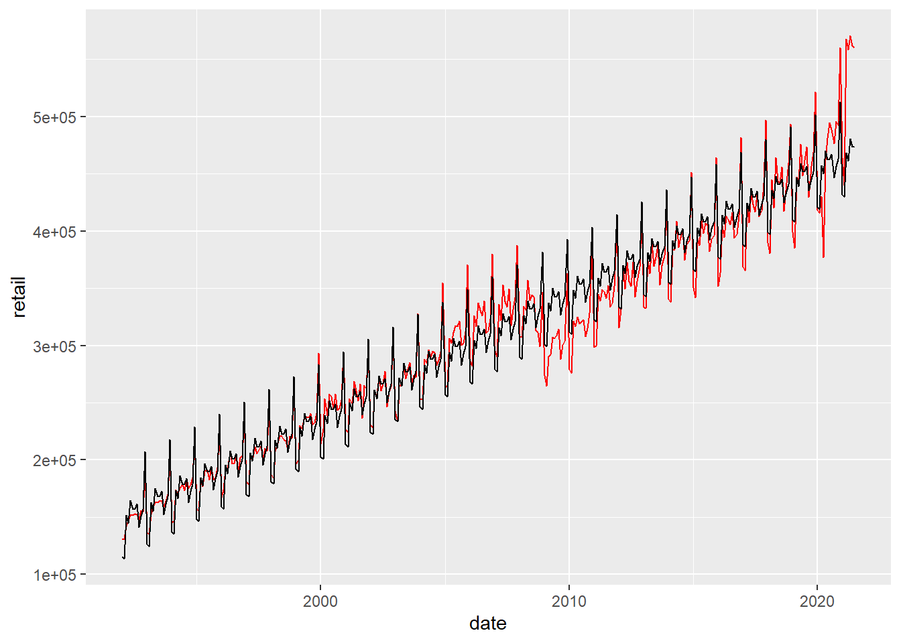
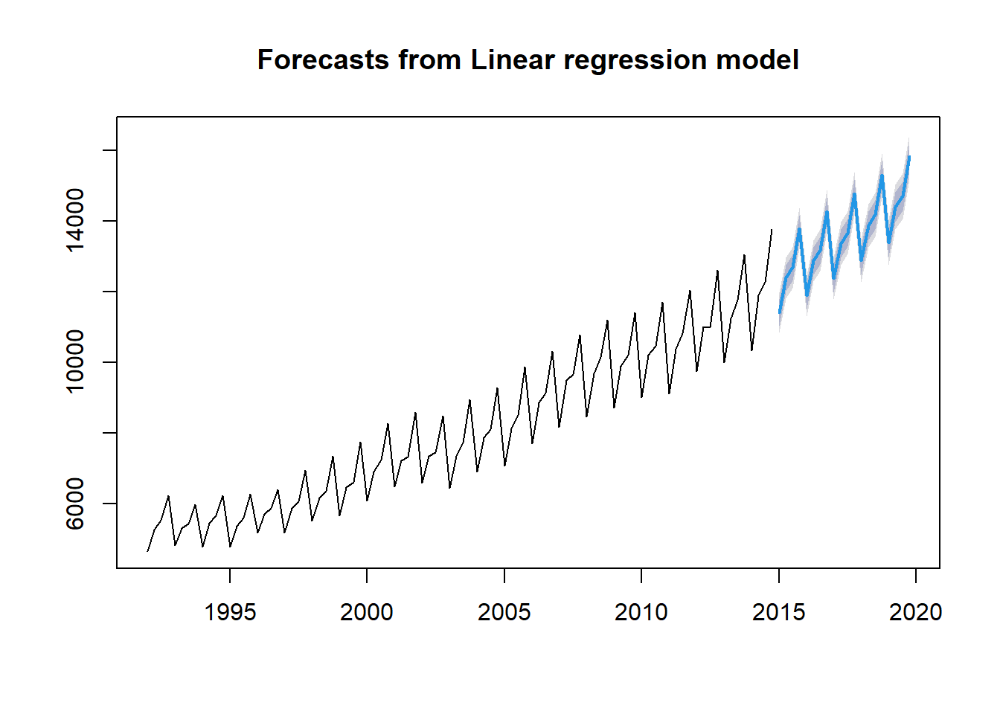

11.4 Autoregressive Model
An autoregressive model includes lagged dependent variables. One of the simplest model is an autoregressive model of order 1, i.e., an AR(1) Model
\[y_t = \alpha + \beta \cdot y_{t-1} + \epsilon_t\]
where \(\epsilon_t \sim N(0,\sigma^2)\). Consider the data of earthquakes over magnitude 7 in the data set quakes:

In a first step, a scatter plot is constructed of \(Y_{t-1}\) and \(y_t\). The easiest way is to use the function acf:

## [1] 0.2486712The correlation coefficicent of 0.25 indicates a weak positive correlation between the number of earthquakes in periods \(t\) and \(t-1\). Remember that correlation is not causation. The AR(1) model can be estimated with the lm() function used previously:
##
## Call:
## lm(formula = quakes ~ Lag(quakes), data = quakes)
##
## Residuals:
## Min 1Q Median 3Q Max
## -7.8331 -2.5881 -0.8132 2.0394 10.1470
##
## Coefficients:
## Estimate Std. Error t value Pr(>|t|)
## (Intercept) 9.51834 1.26910 7.500 3.05e-11 ***
## Lag(quakes) 0.25498 0.09596 2.657 0.00922 **
## ---
## Signif. codes: 0 '***' 0.001 '**' 0.01 '*' 0.05 '.' 0.1 ' ' 1
##
## Residual standard error: 3.997 on 97 degrees of freedom
## (1 observation deleted due to missingness)
## Multiple R-squared: 0.06785, Adjusted R-squared: 0.05824
## F-statistic: 7.06 on 1 and 97 DF, p-value: 0.009216Note that although the slope coefficient associated with the lagged term is statistically significant, the R-squared value is very low. A second example considers quarterly beer production in Australia. In a first step, the data is converted into a time series:
Next, the data is plotted using a function from the package ggfortify. Additional documentation using the package is found under Plotting ts objects.

Note that the beer now appears in a different category in the Global Environment, i.e., not under “Data” anymore. The function tslm from the package forecast is used next. The function fits a linear model including seasonality and a trend component (and a trend-squared component if desired).
##
## Call:
## tslm(formula = beer ~ trend + I(trend^2) + season)
##
## Residuals:
## Min 1Q Median 3Q Max
## -677.24 -163.84 2.12 195.34 529.37
##
## Coefficients:
## Estimate Std. Error t value Pr(>|t|)
## (Intercept) 4.082e+03 9.865e+01 41.381 < 2e-16 ***
## trend 3.975e+01 4.298e+00 9.249 1.53e-14 ***
## I(trend^2) 4.200e-01 4.477e-02 9.381 8.26e-15 ***
## season2 8.677e+02 7.987e+01 10.864 < 2e-16 ***
## season3 1.043e+03 7.990e+01 13.061 < 2e-16 ***
## season4 2.031e+03 7.993e+01 25.408 < 2e-16 ***
## ---
## Signif. codes: 0 '***' 0.001 '**' 0.01 '*' 0.05 '.' 0.1 ' ' 1
##
## Residual standard error: 270.8 on 86 degrees of freedom
## Multiple R-squared: 0.9867, Adjusted R-squared: 0.9859
## F-statistic: 1278 on 5 and 86 DF, p-value: < 2.2e-16The package forecast can be also be used to forcast:
The third examples uses data on Japanese car production (jcars) to illustrate the concept of autocorrelation. The focus is on car production after 1963.
In a first step, the data is visualized using ggplot:
The sample autocorrelation function (ACF) is the correlation between \(y_t\) and \(y_{t-1}\), \(y_{t-2}\), \(y_{t-3}\), and so on. It can be written as follows: \[\rho_j = \frac{Cov(y_t,y_{t-j})}{\sqrt{Var(y_t)\cdot Var(y_{t-j})}}\]
The ACF can be used to identify a possible structure of time series either of the actual time series or the residuals of the regression. The autocorrelation function (ACF) is plotted using the function acf() in R.